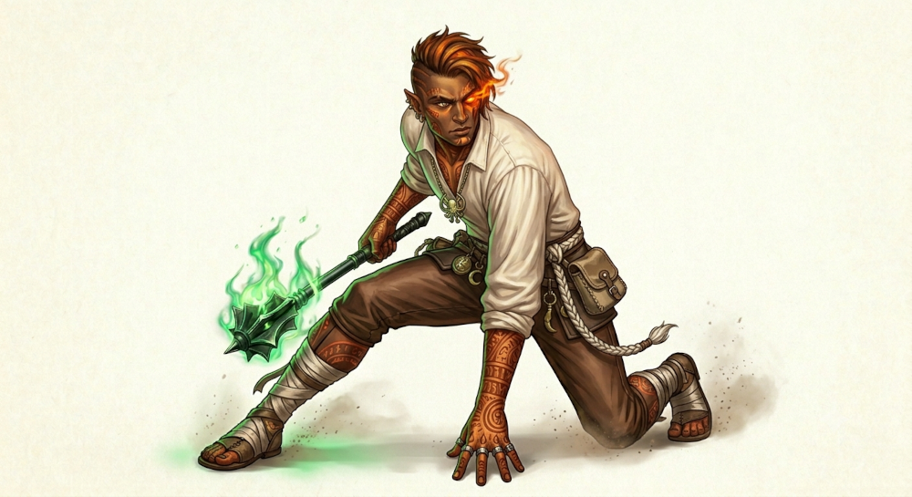

Agora iremos criar uma nova página com novas imagens ná mesma, veja só
Página 2Também irei testar uma imagem própria para ver se realmente entendemos o procedimento

Está imagem se trata de um personagem de: RPG
também iremos inserir um áudio para teste.